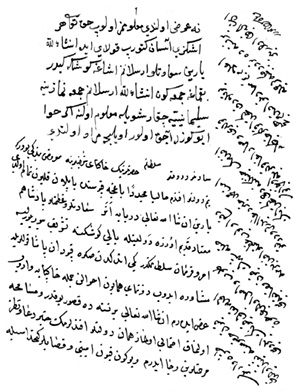

Belge 5
“Sa’âdetlü ve devletlü sultanım hazretlerinin hâkipây-i şerîflerine ma’rûz-i bendegî budur ki:
Benim devletlü efendim, hâliyâ müceddeden Bağçe-Kapusu’nda yapılan kalyon tamam oldı; yarın inşallâhu ta’âlâ deryaya iner. Sa’âdetlü ve ‘azametlü pâdişahım mu’tâd-i kadîm üzere devlet ile Yalı-Köşkü’ne teşrîf buyrulur ise emr ü fermân sultanımındır, gemi indikden sonra Kapudân Paşa kullarıyla müşâvere idüb donanma-yi hümâyûn ahvâlin cümle hâkipâya varub ‘arz ederim. İnşallâhu ta’âlâ bir nesnede kusûr yokdur ve müsâmaha olunmak ihtimâli olmaz, hemân devletlü efendilerimin hayr du’â ve nazar-i merhametlerin ricâ iderim. Ve bugün Koyun-emîni ve kasablar kethüdasıyla taşra varılub koyun husûsuna takayyüd olundu, elhamdülillâhi ta’âlâ koyunun ilerüsü gelüb vâsıl oldı, ‘avn-i hakla şehrin koyun muzâyakası def ‘olub ‘azametlü efendilerimle ümmet-i Muhammed hayr du’âlar iderler ve devletlü efendimin çiftliğine dahi kethüda Beg kulları ve mi’mâr ağa kullarıyla uğrayub yokladık, kethüda kulunuz hâkipâya i’lâm (eder), benim sa’âdetlü efendim hiç bir nesnede tereddüd çekmiyeler, cümle inşallâhu ta’âlâ olur, biter, fermân sultanımındır.”
H. H. Kösem Sultan’ın veziriâzama sultan adına emri:
“Ne ‘arz olundu ma’lûmumuz olub Hak ta’âlâ her işinizi âsân getürüb kolay ide. İnşallâh yarın sa’âdetlü Arslanım (IV. Murad) aşağı köşke gider bakmağa, Cum’a günü inşallâh Arslanım Cum’a namazına Süleymaniye’ye çıkar, şöyle ma’lûm oluna, eğer hava eyü güzel açık olur, öylece murâd olundu.”
Yorum:
1. Veziriâzam Bağçe-Kapusu’nda bir tersâne olduğu, orada bir kalyon yapıldığı, denize inerken âdet üzere pâdişahın hazır olmak üzere Yalı-Köşkü’ne gelmesini hatırlatıyor.
2. Bu merâsim sonrası kapudân paşa ile donanma durumu görüşülecek ve görüşme birlikte ‘arz edilecek. Donanma konusunda bu hazırlık dikkati çeker. Girit savaşı dolayısıyla Ege Denizi’nde Venedik’le sürekli çarpışmalar gündemdedir. Bu genel nottan tarih belirlemek mümkün değildir.

Belge 5: TKSA E2457/22, veziriâzam ‘arzı
3. İstanbul ve kapıkulunun koyun gereksinimi, daima devletin ele aldığı, bir emîn idaresinde önem verdiği bir konudur, şehirde et sıkıntısı, devlete karşı eleştiri, hatta ayaklanma nedeni olabiliyor. Rumeli, Akkerman ve Anadolu’dan yüz binlerce koyunun sevki celebkeşlik kurumuna yol açmıştır. Celebler belli sayıda koyun toplamak ve İstanbul’a sevk etmek üzere devletle bir iltizam anlaşması yapar. Meselâ Konya Ovası’nda oturan aşîretlerden yılda 300 bin koyunu İstanbul’a teslim etme esasına göre, Cihanbeyli âşireti beyi ile bir anlaşma yapılmıştır. Koyun emîni bu işlerden sorumludur. İstanbul’a gelen koyunların kasaplara dağıtılması, kasapları temsil eden kasablar kethüdası eliyle yapılır. Veziriâzam, koyun işi için onlarla buluşup “koyun husûsuna takayyüd olundu” diye Kösem’i bilgilendiriyor. Noksan olduğunu, fakat zamanla başka koyun sürülerinin geldiğini bildiriyor; “koyun muzâyakası (sıkıntı)” olmadığı hakkında güvence vermeyi gerekli buluyor.
4. ‘Arzda başka bir konu, sultanın çiftliğinin tamamlanmasıyla ilgilidir. Vâlidenin bu konuyla ilgilendiği anlaşılıyor. İstanbul ve Üsküdar’da sultana ve devlet erkânına ait çiftlikler şehir tarihi bakımından önemli bir konudur. Kanunî dönemi defterdârlarından İskender Çelebi’nin Florya’daki bahçesi devletleştirildi, devlet ziyâfetlerine sahne oluyordu.
Bu devirde, bu çiftliklerde saray halkı ve devlet büyüklerinin tertip ettikleri büyük ziyâfetler, siyasî bir önem kazanmıştır. Vâlide Kösem Sultan’ın bu ziyâfetleri, devlet işlerinde nüfuzunu pekiştirmek için kullandığı biliniyor.